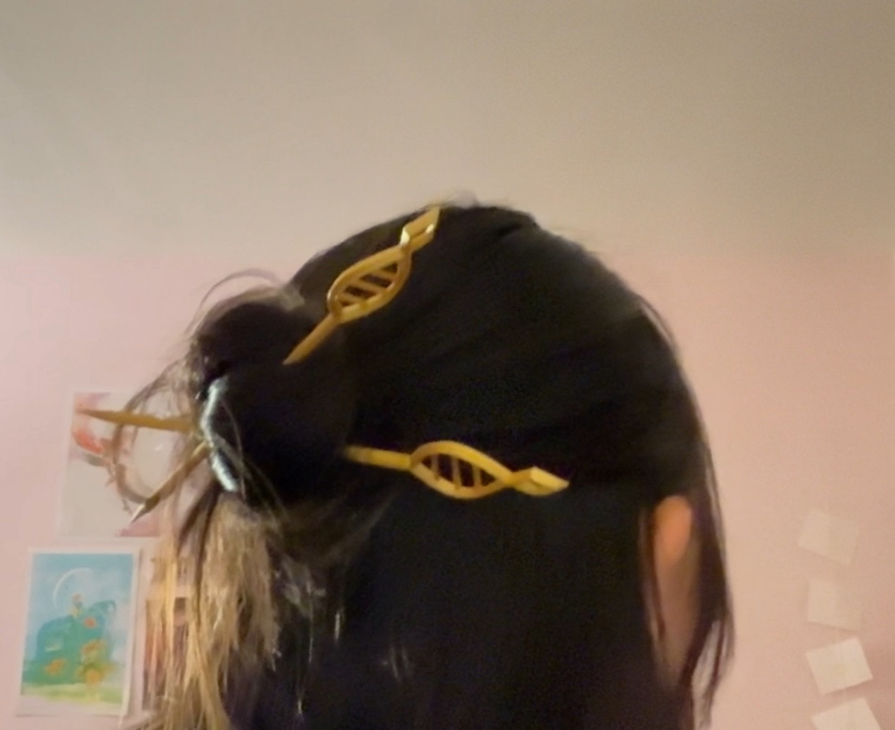
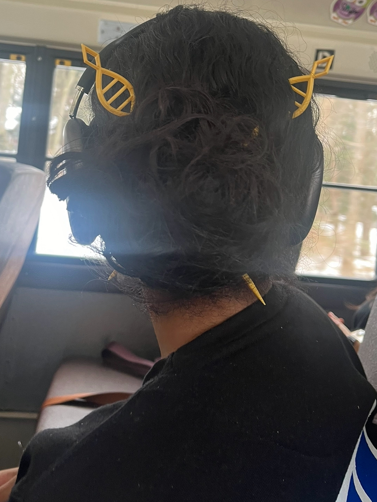

Ruan Mei Hair Chopstick (From Honkai: Star Rail)

Model Description
After going through a phase where I got obsessed over hair pins/chopsticks, I wanted to make some hair chopsticks based on a character from Honkai: Star Rail named Ruan Mei.
As a genius biologist, Ruan Mei's hair chopsticks have DNA motifs on them. But for some reason, her in-game model only portrays 2 nucleotides, so I made mine with three to show a proper codon. It's a subtle accessory that pays homage to one of my favorite games.
This project was made primarily using revolves and extrusions.
 
3D Printer Settings
Maximum length: ~8.5 in
Maximum width: ~1 in
Single print. Intended to fit on a 220x220x220mm base plate.
Here were my 3D printer settings:
3D printer: Creality Ender 3 Pro
Slicer: Ultimaker Cura
Filament type: PLA
Layer Height: .2mm
Wall/Top/Bottom Thickness: .8mm
Infill: 20%
Printing Temp: 200 degrees C
Base Plate Temp: 60 degrees C